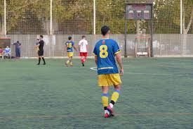

Galería
Aquí se muestran los momentos más destacados de la temporada: victorias, goles decisivos y celebraciones que dejan claro que el Barrio Peral Cadete va a ascender sí o sí.

El Barrio Peral Primera Cadete está demostrando un nivel increíble esta temporada, y todo apunta a que el ascenso está cada vez más cerca.
Como parte del equipo, sé que cada jugador está dejando el alma en el campo. El compromiso, la garra y la unión del Barrio Peral Cadete nos empuja directo al ascenso.
Aquí se muestran los momentos más destacados de la temporada: victorias, goles decisivos y celebraciones que dejan claro que el Barrio Peral Cadete va a ascender sí o sí.